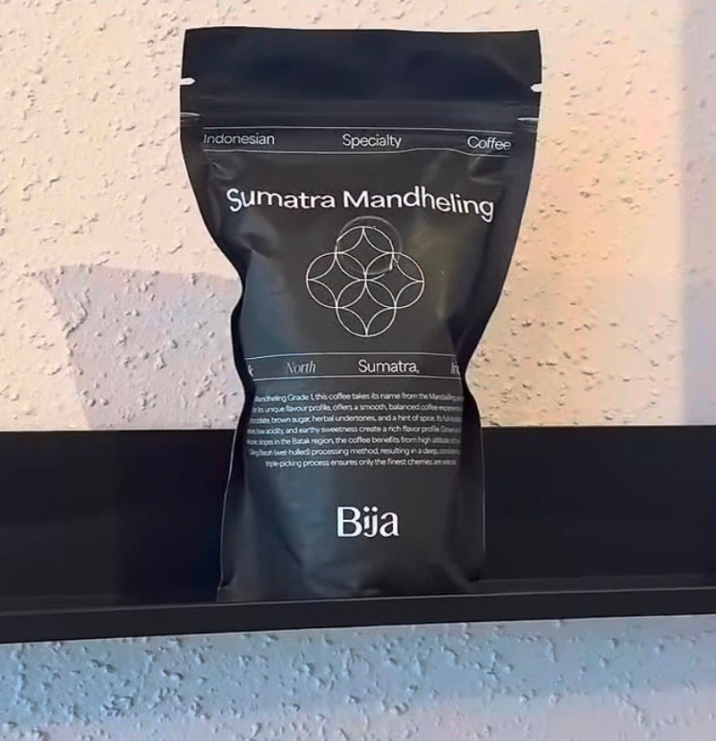
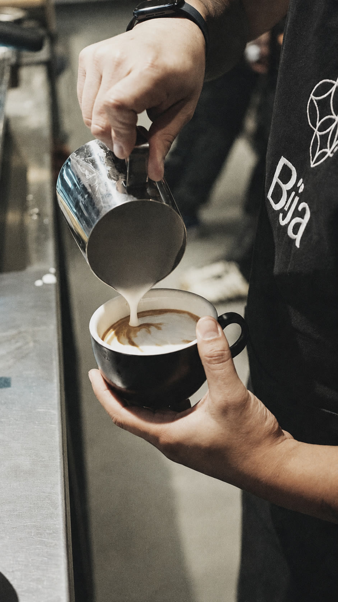

Indonesia and coffee
A small bean’s voyage across oceans and centuries, into Indonesia’s volcanic highlands.
Read the storyAward-winning specialty coffee from Sumatra, Java and Bali, poured with a warm welcome two minutes from Piccadilly Circus, and roasted beans delivered to your door.

Chosen by public vote: a little corner of Indonesia, shared with everyone who has made Bija part of their day.
Read our award storyA small bean’s voyage across oceans and centuries, into Indonesia’s volcanic highlands.
Read the story
Highland Arabica and forest-grown Robusta: two landscapes, one distinctly Indonesian blend.
Read the story
The seed, the Kawung pattern and the sketches that became our mark.
Read the story
Kopi tubruk, Kopi Susu Aren and the other favourites we pour every day.
See the café menuVolcanic slopes, rainforest highlands and generations of farming tradition: meet the islands and landscapes behind the coffee in your cup.
Begin with a volcano
Origins, tasting notes and brewing suggestions: find a bag you’ll love. 200 g bags, ground the way you brew.

Amber light, pale wood, flower-shaped lamps and a living wall of succulents on the mezzanine, two minutes from Piccadilly Circus and the Eros statue.

Runners, cyclists, office neighbours and friends: the coffee brings us together, and the people make every visit their own.
Explore communities
Corporate coffee, private events and catering, from delivered coffee and pastries to a full signature-drinks bar, from £11.50 per person.
Explore our packages
Skip the queue, collect 10 points for every £1 and a stamp on every drink, and keep your Bija Card, balance and Beans Club in one place.
Open the appScan with your phone’s camera to open the app.